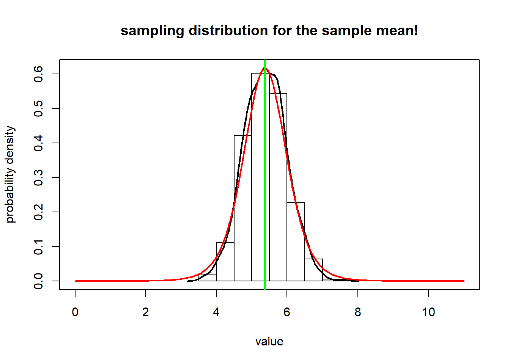
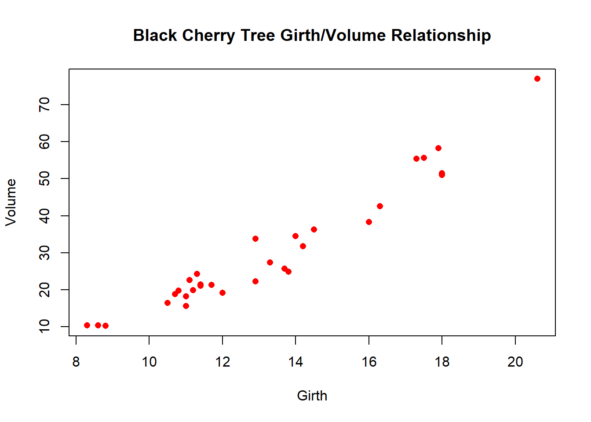

Why focus on algorithms?
NRES 746
Fall 2019
NOTE: for those wishing to follow along with the R-based demo in class, click here for an R-script that contains all of the code blocks in this lecture.
Algorithmic vs standard statistics: a brief demonstration
Standard t-test
Here is a made-up data set.

Let’s imagine we’re interested in testing whether the expected mass of a study organism (let’s say a pygmy short-horned lizard, Phrynosoma douglasii) in Treatment A (e.g., habitat restoration treatment) differs from Treatment B (e.g., no habitat restoration). In other words: does knowledge of an individuals treatment status contribute anything to understanding and/or predicting an individual’s mass?
#############
# Start with a made-up data frame!
#############
df <- data.frame(
TreatmentA = c(175, 168, 168, 190, 156, 181, 182, 175, 174, 179),
TreatmentB = c(185, 169, 173, 173, 188, 186, 175, 174, 179, 180)
)
summary(df) # summarize! ## TreatmentA TreatmentB
## Min. :156.0 Min. :169.0
## 1st Qu.:169.5 1st Qu.:173.2
## Median :175.0 Median :177.0
## Mean :174.8 Mean :178.2
## 3rd Qu.:180.5 3rd Qu.:183.8
## Max. :190.0 Max. :188.0sample.size <- length(df$TreatmentA) # determine sample size
reshape_df <- data.frame( # "reshape" the data frame so each observation gets its own row (standard format)
Treatment = rep(c("A","B"),each=sample.size),
Mass = c(df$TreatmentA,df$TreatmentB)
)
plot(Mass~Treatment, data=reshape_df) # explore/visualize the data
# boxplot(df$TreatmentA,df$TreatmentB,names=c("TreatmentA","TreatmentB")) # (alternative method!)
observed_dif <- mean(df$TreatmentA) - mean(df$TreatmentB) # compute sample statistic
observed_dif## [1] -3.4You probably recognize this as a standard t-test. For now, we are assuming that the samples are independently drawn from normally distributed populations with equal variances. We can run a t-test in R easily, using just one line of code!
################
# Perform standard t-test
################
t.test(df$TreatmentA,df$TreatmentB, var.equal=TRUE, paired=FALSE)##
## Two Sample t-test
##
## data: df$TreatmentA and df$TreatmentB
## t = -0.94737, df = 18, p-value = 0.356
## alternative hypothesis: true difference in means is not equal to 0
## 95 percent confidence interval:
## -10.93994 4.13994
## sample estimates:
## mean of x mean of y
## 174.8 178.2Brute-force t-test
But imagine that we didn’t know about the t-test. Let’s build a solution to the same problem from the ground up, using our statistical intuition and R! Of course this is totally unnecessary in this case, but you will quickly run into problems with no simple, “canned” solution. That’s where you might really need to develop an algorithm from scratch!
First, let’s state the problem:
We want to know if the expected value (mean mass) differs by treatment (habitat restoration vs control). We have small random (but representative) samples from these two putative populations.
Can we build an algorithm to generate a p-value?
Recall the difference between a “population” and a “sample” in statistics:

Ultimately, we want to make inference about a population, but all we have in hand is the sample. So we compute one or more statistics from our sample and use probabilistic reasoning to infer what our sample says about the population-level parameters we are interested in. Because we didn’t observe the whole population (the sample typically represents only a small fraction of the total population), there’s often substantial uncertainty about how well the sample statistic actually represents the population of interest- this is called sampling uncertainty.
Here, the population we are referring to is all pygmy short-horned lizards living in sagebrush habitats. The population parameter we are interested in is the difference in body mass between lizards raised on restored sagebrush habitats versus those raised on cheatgrass-invaded sites. The sample refers to all lizards actually measured as part of this study. Finally, the sample statistic is the observed difference in mean body mass between the two treatment groups.
Let’s start by simulating a statistical population under the null hypothesis (no treatment effect):
######################
# ALTERNATIVE ALGORITHMIC APPROACH!
######################
#############
# Simulate the STATISTICAL POPULATION under the null hypothesis
#############
lots <- 1000000 # large number approximating infinity
popMean_null <- mean(reshape_df$Mass) # assume groups A and B come from a population with common mean
popSD_null <- sd(reshape_df$Mass) # and common standard deviation...
popData_null <- rnorm(n=lots,mean=popMean_null,sd=popSD_null) # the statistical "population" of interest (under null model w no treatment effect)Then we can draw a sample from that population:
#############
# Draw a SAMPLE from that population
#############
sampleA <- sample(popData_null,size=sample.size) # use R's native "sample()" function
sampleB <- sample(popData_null,size=sample.size)
round(sampleA)## [1] 181 177 167 195 184 177 178 184 182 178difference <- mean(sampleA)-mean(sampleB) # sample statistic = difference between sample means
difference## [1] 4.464412Try it! What did you get? It may differ quite a bit from what I got!
This difference between sample means represents one possible observation under a null hypothesis that there is no underlying difference in body mass between the two treatments. The fact that this difference is not zero (despite the fact that the null hypothesis is true!) represents sampling error.
Our ultimate goal is to determine how likely it is that the observed difference in treatment means is just an artifact of sampling error! This is exactly what the p-value from a t-test tells us!
Our job then is to develop a computational algorithm that allows us to use the sample statistic (difference in sample means) to infer something about the population-level parameter (effect of habitat restoration on lizard body mass).
Q What exactly are we trying to infer about the population-level parameter here?
Q Given that our main goal is to falsify our null hypothesis about the population of interest, can you think of an algorithmic way to do this?
Let’s generate a distribution of sampling-error “anomalies” (differences between the group means resulting from sampling error) expected under the null hypothesis (i.e., there is fundamentally no difference between the two groups).
Here, we repeat this process many times (using a “FOR” loop in R), each time drawing a different random sample of body masses from our statistical population.
#################
# Repeat this process using a FOR loop
#################
reps <- 1000 # set the number of replicates
null_difs <- numeric(reps) # initialize a storage vector
for(i in 1:reps){ # for each replicate...
sampleA <- sample(popData_null,size=sample.size) # draw a sample of body masses assuming no treatment effect
sampleB <- sample(popData_null,size=sample.size) # draw a sample of body masses assuming no treatment effect (again!)
null_difs[i] <- mean(sampleA)-mean(sampleB) # compute and store the sampling error produced under the null hypothesis
}
hist(null_difs) # plot out all the sampling errors under the null hypothesis as a histogram
abline(v=observed_dif,col="green",lwd=3) # indicate the observed sample statistic. 
Now, all we need to do to compute a p-value is to compare this vector of sampling errors with the observed statistic (between-group difference):
############
# Generate a p-value algorithmically!!
############
ordered_difs <- sort(abs(null_difs)) # sort the vector of (absolute) anomalies (sampling errors)
higher_anomaly <- length(which(ordered_difs>=abs(observed_dif))) # how many of these sampling errors equal or exceed the "error" represented by the observed statistic?
p_value <- higher_anomaly/reps # compute a p-value!
p_value## [1] 0.342Now, for convenience, let’s collapse this all into a function for conducting our algorithmic t-test:
#############
# Develop a function that wraps up all the above steps into one!
#############
t.test.algorithm <- function(dat = reshape_df, group = "Treatment", value = "Mass" ){
#############
# Compute the sample statistic
#############
indexA <- which(dat[,group]=="A") # rows representing treatment A
indexB <- which(dat[,group]=="B") # rows representing treatment B
observed_dif <- mean(dat[indexA,value]) - mean(dat[indexB,value])
sample.size <- length(indexA) # compute sample size
#############
# Simulate the STATISTICAL POPULATION under the null hypothesis
#############
lots <- 1000000 # large number approximating infinity
popMean_null <- mean(dat[,value]) # assume groups A and B come from a population with common mean
popSD_null <- sd(dat[,value]) # and common standard deviation...
popData_null <- rnorm(n=lots,mean=popMean_null,sd=popSD_null) # the statistical "population" of interest (under null model w no treatment effect)
#################
# Repeat sampling process (sampling from population) using a FOR loop
#################
reps <- 1000 # set the number of replicates
null_difs <- numeric(reps) # initialize a storage structure to hold one anomaly (sampling error) per replicate
for(i in 1:reps){ # for each replicate...
sampleA <- sample(popData_null,size=sample.size) # draw a sample assuming no treatment effect
sampleB <- sample(popData_null,size=sample.size) # draw a sample assuming no treatment effect (again!)
null_difs[i] <- mean(sampleA)-mean(sampleB) # compute and store the sampling error produced under the null hypothesis
}
ordered_difs <- sort(abs(null_difs)) # sort the vector of sampling errors
higher_anomaly <- length(which(ordered_difs>=abs(observed_dif))) # how many of these sampling errors equal or exceed the sample statistic?
p_value <- higher_anomaly/reps
to_return <- list() # initialize object to return
to_return$null_difs <- null_difs
to_return$p_value <- p_value
to_return$observed_dif <- observed_dif
return(to_return)
}
ttest <- t.test.algorithm(dat = reshape_df, group = "Treatment", value = "Mass" ) # try to run the new function
ttest$p_value # get the p_value
hist(ttest$null_difs) # plot out all the sampling errors under the null hypothesis as a histogram
abline(v=ttest$observed_dif,col="green",lwd=3) # indicate the observed sample statistic. NOTE The following exercises are part of lab 1- don’t be too afraid if you don’t know how to answer these just yet!
Challenge question (part of Lab 1):
What if we wanted to relax the assumption of equal variances? That is, what if our null hypothesis were that each treatment group has the same mean, but could differ in variance? Modify the above function (“t.test.algorithm()”) to do this! To enable automated grading, please name your new function “t.test.vardif()”. To convince yourself that your new function works, try running the following code:
ttest_vardif <- t.test.vardif(dat=df.vardif)
where “df.vardif” is the following dataframe (before reshaping- note that you need to reshape this dataframe before using it in the function!):
###########
# Test data for unequal variances...
df.vardif <- data.frame(
TreatmentA = c(135, 128, 139, 122, 126, 121, 128, 135, 134, 129),
TreatmentB = c(215, 69, 143, 153, 218, 186, 125, 98, 271, 340)
)
summary(df.vardif) # summarize! Challenge 2 (part of Lab 1)
Modify the above algorithm to allow for unequal sample sizes AND unequal variances. That is, our null hypothesis is the same (equal treatment means, potentially unequal variances), but now we enable each treatment group to have different sample sizes! To enable automated grading, please name your new function “t.test.ndif()”. To convince yourself that your new function works, try running the following code:
ttest_ndif <- t.test.ndif(dat=df.ndif)
where “df.ndif” is the following dataframe (before reshaping- note that you need to reshape this dataframe before using it in the function!):
###########
# Test data for unequal sample sizes...
# NOTE: we use R's missing data designation "NA" to fill in missing data for treatment B here...
df.ndif <- data.frame(
TreatmentA = c(135, 128, 139, 122, 126, 121, 128, 135, 134, 129, 134, 125, 130, 132, 125),
TreatmentB = c(98, 271, 340, rep(NA,12))
)
summary(df.ndif) # summarize! Take-home message
The value of the algorithmic, brute-force approach to statistics is the flexibility! We have to be aware of assumptions in all of our analyses, but when we build our own computational algorithms, we can easily “relax” these assumptions! We only make the assumptions we are comfortable making. And we have to be totally explicit about our assumptions, because they are literally built into the code- we can’t ignore any assumptions!
A non-parametric alternative: permutation test algorithm
What if we don’t want to make any assumptions about the process that generated the data? The normal distribution can arise in many different ways, but many data-generating processes don’t result in a normal distribution!
We might be able to intuit which of the many alternative distributions makes the most sense for our data. But many times we can’t do this with any level of certainty. What can we do in this case? A permutation test provides one answer.
Let’s build this algorithm together.
Here is some pseudocode:
- Define the number of permutations to run (number of replicates)
- For each replicate:
- randomly assign each observed body mass to a treatment group (so that any information about the true treatment group is lost!)
- compute the difference between the group means after randomly shuffling the assignment of treatment groups
- store this value in a vector
- Plot a histogram of null differences between group A and group B under the null hypothesis (sampling errors)
- Add a vertical line to the plot to indicate the observed difference
##################
# NON-PARAMETRIC T-TEST -- PERMUTATION TEST
##################
reps <- 5000 # Define the number of permutations to run (number of replicates)
null_difs <- numeric(reps) # initialize storage variable
for (i in 1:reps){ # For each replicate:
newGroup <- reshape_df$Treatment[sample(c(1:nrow(reshape_df)))] # randomly shuffle the observed data with respect to treatment group
dif <- mean(reshape_df$Mass[newGroup=="A"]) - mean(reshape_df$Mass[newGroup=="B"]) # compute the difference between the group means after reshuffling the data
null_difs[i] <- dif # store this value in a vector
}
hist(null_difs) # Plot a histogram of null differences between group A and group B under the null hypothesis (sampling errors)
abline(v=observed_dif,col="green",lwd=3) # Add a vertical line to the plot to indicate the observed difference
Now we can compute a p-value, just as we did before:
########
# Compute a p-value based on the permutation test, just like we did before!
########
higher_anomaly <- length(which(abs(null_difs)>=abs(observed_dif)))
p_value <- higher_anomaly/reps
p_value## [1] 0.3746Again, for convenience, let’s package this new t test into an R function:
#############
# Develop a function that performs a permutation-t-test!
#############
t.test.permutation <- function(dat = reshape_df, group = "Treatment", value = "Mass" ){
#############
# Compute the sample statistic
#############
indexA <- which(dat[,group]=="A") # rows representing treatment A
indexB <- which(dat[,group]=="B") # rows representing treatment B
observed_dif <- mean(dat[indexA,value]) - mean(dat[indexB,value])
reps <- 5000 # Define the number of permutations to run (number of replicates)
null_difs <- numeric(reps) # initialize storage variable
for (i in 1:reps){ # For each replicate:
newGroup <- reshape_df$Treatment[sample(c(1:nrow(reshape_df)))] # randomly shuffle the observed data with respect to treatment group
dif <- mean(reshape_df$Mass[newGroup=="A"]) - mean(reshape_df$Mass[newGroup=="B"]) # compute the difference between the group means after reshuffling the data
null_difs[i] <- dif # store this value in a vector
}
higher_anomaly <- length(which(abs(null_difs)>=abs(observed_dif)))
p_value <- higher_anomaly/reps
to_return <- list() # initialize object to return
to_return$null_difs <- null_difs
to_return$p_value <- p_value
to_return$observed_dif <- observed_dif
return(to_return)
}
ttest2 <- t.test.permutation()
ttest2$p_value
hist(ttest2$null_difs) # Plot a histogram of null differences between group A and group B under the null hypothesis (sampling errors)
abline(v=ttest2$observed_dif,col="green",lwd=3) # Add a vertical line to the plot to indicate the observed differenceBootstrapping a confidence interval
Let’s imagine we want to compare different predictor variables in terms of how strong the relationship is with a response variable. In this case, we will use the coefficient of determination (\(R^2\)) as a measure of how good a predictor is. However, we want to be able to say that one predictor is definatively better than another one – for that, we would like a confidence interval around the \(R^2\) value.
But… none of the standard R packages provide a confidence interval around the \(R^2\) value… What do do???
With an algorithmic approach to statistics, getting stuck is not an option. We can just write some code!
Let’s use the “trees” dataset provided in base R:
##############
# Demonstration: bootstrapping a confidence interval!
## use the "trees" dataset in R:
head(trees) # use help(trees) for more information## Girth Height Volume
## 1 8.3 70 10.3
## 2 8.6 65 10.3
## 3 8.8 63 10.2
## 4 10.5 72 16.4
## 5 10.7 81 18.8
## 6 10.8 83 19.7Tree volume is our response variable. We want to test whether girth or height are better predictors of tree volume.
Let’s first do some basic data explorations:
#########
# Basic data exploration
plot(trees$Volume~trees$Height, main = 'Black Cherry Tree Height/Volume Relationship', xlab = 'Height', ylab = 'Volume', pch = 16, col ='blue')
plot(trees$Volume~trees$Girth, main = 'Black Cherry Tree Girth/Volume Relationship', xlab = 'Girth', ylab = 'Volume', pch = 16, col ='red')
Let’s write a simple function that generates coefficients of determination given a response and some predictor variables:
#########
# Function for returning a vector of R-squared statistics from models regressing a response variable on multiple possible predictor variables
# here we assume that all columns in the input data frame that are NOT the response variable are potential predictor variables.
Rsquared <- function(df,responsevar="Volume"){ # univariate models only- interaction and multiple regression not implemented here
response <- df[,responsevar] # extract the response variable
names <- names(df)
rsq <- numeric(length(names)) # named storage vector
names(rsq) <- names(df)
rsq <- rsq[names(rsq)!=responsevar] # assume that all columns that are not the response variable are possible predictor variables
for(i in names(rsq)){ # loop through predictors
predictor <- df[,i] # extract this predictor
model <- lm(response~predictor) # regress response on predictor
rsq[i] <- summary(model)$r.square # extract R-squared statistic
}
return(rsq)
}Let’s first compute the \(R^2\) values for all predictor variables:
#########
# test the function to see if it works!
stat <- Rsquared(trees,"Volume")
stat## Girth Height
## 0.9353199 0.3579026Now we can use a “bootstrapping” procedure to generate a confidence interval around these values, to see how certain we can be about the strength of the linear relationship between the response and the predictor variable in general (the population-level parameter) on the basis of the computed R-squared value (a sample statistic)
Let’s first write a function to generate bootstrap samples from a dataset:
############
# new function to generate "bootstrap" samples from a data frame
boot_sample <- function(df,statfunc,n_samples,n_stats,responsevar="Volume"){
indices <- c(1:nrow(df))
output <- matrix(NA,nrow=n_samples,ncol=n_stats) # storage object- to store a single bootstrapped sample from the original data
for(i in 1:n_samples){ # for each bootstrap replicate:
boot_rows <- sample(indices,size=nrow(df),replace=T) # randomly sample observations with replacement
newdf <- df[boot_rows,] # dataframe of bootstrapped observations
output[i,] <- statfunc(newdf,responsevar) # generate statistics from the bootstrapped sample (e.g., compute Rsquared after regressing y on all possible x variables)
}
return(output)
}Now we can generate a bunch of “bootstrapped” statistics to compare with the ones we calculated from the full dataset. Here, the values represent R-squared values from alternative bootstrapped samples. Each row is a different bootstrapped sample, and each column is a different predictor variable.
##########
# Generate a few bootstrapped samples!
boot <- boot_sample(df=trees,statfunc=Rsquared,n_samples=10,n_stats=2) # generate test stats from lots of bootstrapped samples
colnames(boot) <- names(stat) # name the columns to recall which predictor variables they represent
boot## Girth Height
## [1,] 0.9618751 0.4038844
## [2,] 0.9285556 0.4370219
## [3,] 0.9040846 0.5274028
## [4,] 0.9328471 0.3301241
## [5,] 0.9350686 0.3758060
## [6,] 0.8907767 0.2047991
## [7,] 0.9281989 0.2743616
## [8,] 0.9243251 0.2400101
## [9,] 0.9404552 0.3986418
## [10,] 0.9491087 0.4400782stat## Girth Height
## 0.9353199 0.3579026Finally, we can use the quantiles of the bootstrap samples to generate bootstrap confidence intervals.
#############
# use bootstrapping to generate confidence intervals for R-squared statistic!
boot <- boot_sample(df=trees,statfunc=Rsquared,n_samples=1000,n_stats=2) # generate test statistics (Rsquared vals) for 1000 bootstrap samples
confint <- apply(boot,2,function(t) quantile(t,c(0.025,0.5,0.975))) # summarize the quantiles to generate confidence intervals for each predictor variable
colnames(confint) <- names(stat)
t(confint)## 2.5% 50% 97.5%
## Girth 0.8959950 0.9377498 0.9636173
## Height 0.1345282 0.3621348 0.5856605Bootstrapping challenge problem (lab 1):
Generate bootstrap confidence intervals around the regression coefficients by modifying the above code. Compare with the standard confidence intervals on the regression coefficients given by R in the standard “lm()” and “confint()” functions. To do this:
Generate a new R function, called “RegressionCoefs()” that takes a data frame as the first input and the name of the response variable as the second input, and returns the (univariate) regression coefficients (\(\beta\)) produced by regressing the response variable on each predictor variable (returning a vector of regression coefficients). You can use the “Rsquared()” function above as a reference!
Generate a new R function, called “BootCoefs()” that meets the following specifications:
- inputs:
- “df” = a data frame that includes the response variable and all possible predictor variables
- “statfunc” = a function for generating summary statistics (regression coefficients) from a data frame (which you already developed in part 1 of this challenge problem)
- “n_samples” = the number of bootstrapped samples to generate
- “n_stats” = the number of predictor variables
- “df” = a data frame that includes the response variable and all possible predictor variables
- algorithm:
- with the data frame, first use the “boot_sample()” function provided above to generate summary statistics for multiple bootstrap samples.
- Then, generate confidence intervals for each variable as the 2.5%, 50% and 97.5% quantile of the summary statistic for each predictor variables.
- with the data frame, first use the “boot_sample()” function provided above to generate summary statistics for multiple bootstrap samples.
- return: a matrix (rows=predictor vars, cols=2.5%, 50%, and 97.5% quantiles). Make sure the rows and columns are labeled properly!
- inputs:
Test your new function(s)!